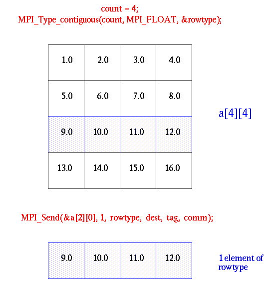
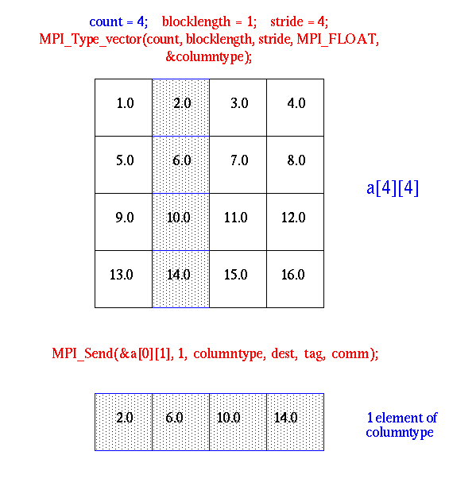
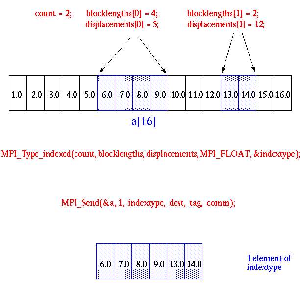
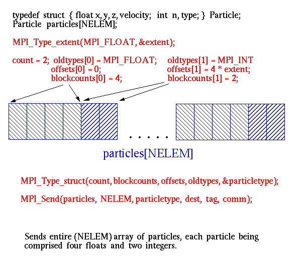

The basic MPI communication mechanisms can be used to send or receive a sequence of identical elements that are contiguous in memory. It is often desirable to send data that is not homogeneous or that is not contiguous in memory. This would amortize the fixed overhead of sending and receiving a message over the transmittal of many elements. MPI provides two mechanisms to achieve this:
| MPI datatype | C datatype |
| MPI_CHAR | signed char |
| MPI_SHORT | signed short int |
| MPI_INT | signed int |
| MPI_LONG | signed long int |
| MPI_UNSIGNED_CHAR | unsigned char |
| MPI_UNSIGNED_SHORT | unsigned short int |
| MPI_UNSIGNED_LONG | unsigned long_int |
| MPI_UNSIGNED | unsigned int |
| MPI_FLOAT | float |
| MPI_DOUBLE | double |
| MPI_LONG_DOUBLE | long double |
| MPI_BYTE | |
| MPI_PACKED |
| MPI datatype | FORTRAN datatype |
| MPI_INTEGER | INTEGER |
| MPI_REAL | REAL |
| MPI_REAL8 | REAL*8 |
| MPI_DOUBLE_PRECISION | DOUBLE PRECISION |
| MPI_COMPLEX | COMPLEX |
| MPI_LOGICAL | LOGICAL |
| MPI_CHARACTER | CHARACTER |
| MPI_BYTE | |
| MPI_PACKED |
Given these datatypes and a count, you can handle messages of contiguous data of the same type.
2.2 Motivation
What if you want to specify:
A few possible solutions are that you could:
Generally, however, these solutions are slow, clumsy, and wasteful of memory. Using MPI_BYTE or MPI_PACKED might also result in a program that isn't portable to a heterogeneous system of machines.
The idea of MPI derived datatypes is to provide a portable and efficient way of communicating non-contiguous or mixed types in a message. MPI derived datatypes provide a simpler, cleaner, more elegant and efficient way to handle this type of data.
Derived datatypes are datatypes that are built from the basic MPI datatypes. To better understand what is needed to construct such a datatype, you need to understand the general concept of an MPI datatype and something called a typemap.
Formally, the MPI Standard defines a general datatype as an object that specifies two things:
4. When and How Do I Use Derived Datatypes?
4.1 When to Use
When you want to create a datatype in C or FORTRAN, you do so by declaring the datatype before executing any statements. Your declarations are read by the compiler that sets up storage for your datatype. In contrast, MPI derived datatypes are created at run-time through calls to MPI library routines. Since MPI derived datatypes are often used to send or receive C or FORTRAN datatypes, in the typical scenario, you first declare your C or FORTRAN datatypes. Later, in the execution part of your program between calls to MPI_INIT and MPI_FINALIZE, you create and use your MPI derived datatypes.
Before you can use a derived datatype, you must create it. Here are the steps you take:
int MPI_Type_commit (MPI_datatype *datatype)
MPI_TYPE_COMMIT (DATATYPE, MPIERROR) INTEGER DATATYPE, MPIERROR
int MPI_Type_free (MPI_datatype *datatype)
MPI_TYPE_FREE (DATATYPE, MPIERROR) INTEGER DATATYPE, MPIERROR
This section presents the MPI functions for constructing derived datatypes.
C : MPI_Type_contiguous (count, oldtype, *newtype)
Fortran : MPI_TYPE_CONTIGUOUS (count, oldtype, newtype,ierr)

C : MPI_Type_vector (count,blocklength,stride,oldtype,*newtype)
MPI_Type_hvector (count,blocklength,stride,oldtype,*newtype)
Fortran : MPI_TYPE_VECTOR (count, blocklength, stride, oldtype, newtype, ierr)
MPI_TYPE_HECTOR (count, blocklength, stride, oldtype, newtype, ierr)
Hvector: MPI_Type_hvector (in C) and MPI_TYPE_HVECTOR (in Fortran), respectively, are the same as those for MPI_TYPE_VECTOR given above, except that displacement stride is specified in bytes rather than by length.
Example

C : MPI_Type_indexed (count, blocklens[], offsets[], old_type,*newtype)
MPI_Type_hindexed (count, blocklens[], offsets[], old_type, *newtype)
Fortran : MPI_TYPE_INDEXED (count, blocklens(), offsets(), old_type(),newtype, ierr)
MPI_TYPE_HINDEXED (count, blocklens(), offsets(), old_type(),newtype, ierr)
Hindexed: MPI_Type_hindexed (in c) and MPI_TYPE_HINDEXED (in FORTRAN), respectively, are the same as those for MPI_TYPE_INDEXED given above, except that offsets array is specified in bytes.
Example

C : MPI_Type_struct (count, blocklens[], offsets[], old_types[], *newtype)
Fortran : MPI_TYPE_STRUCT (count, blocklens(), offsets(), old_type(), newtype, ierr)
Example

extent(Typemap) = ub(Typemap) - lb(Typemap) + pad
Here is the syntax for the extent routine:
int MPI_Type_extent(MPI_Datatype datatype, MPI_Aint *extent)
MPI_TYPE_EXTENT(DATATYPE, EXTENT, MPIERROR)
INTEGER DATATYPE, EXTENT, MPIERROR
int MPI_Get_count(MPI_Status *status,
MPI_Datatype datatype, int *count)
int MPI_Get_elements(MPI_Status *status,
MPI_Datatype datatype, int *count)
MPI_GET_COUNT(STATUS, DATATYPE, COUNT, MPIERROR) MPI_GET_ELEMENTS(STATUS, DATATYPE, COUNT, MPIERROR) INTEGER STATUS(MPI_STATUS_SIZE), DATATYPE, COUNT, MPIERROR